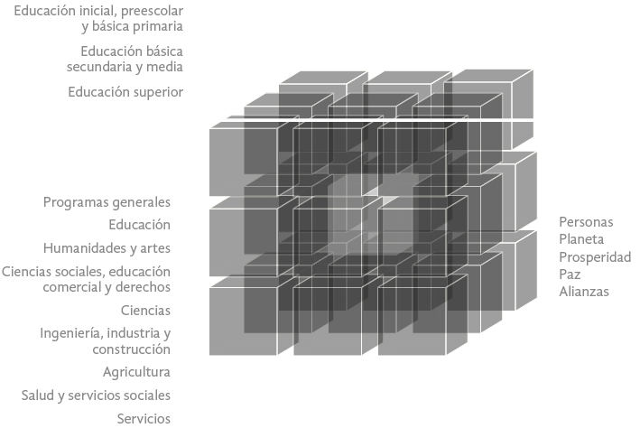

cerrar /repo
Informe de la IA disponible
/repo
Producción y creación audiovisual expandida, los espacios interactivos, la convergencia de medios y la programación creativa orientada a medios audiovisuales
La propuesta de “Expansión para un Marco Metodológico en el Diseño de Universos Narrativos implementado al Desarrollo de Aplicaciones para Mejorar la Experiencia de Usuario” pretende utilizar el concepto de narrativa transmedia, apoyado de herramientas de programación creativa para ser aplicados a experiencias generadas desde las tecnologías inmersivas, para así, generar un ecosistema digital de espacios interactivos que pueda ser aplicado a la apropiación del conocimiento desde diferentes sectores.
Por otra parte, teniendo en cuenta que las narrativas transmedia establecen relatos contados a través de diferentes plataformas, es necesario considerar a su vez las interfaces multimodales (IUM) como aporte a esta nueva construcción, desde la convergencia de medios. Según (Alessandra et al., 2016) estas promueven la naturalidad dada desde relación humano- computadora, estableciendo una armonía del mundo real con el digital. Estas interfaces reconocen diferentes dispositivos de entrada y salida, que se relacionan además con canales sensoriales que permiten la interactividad y el aprendizaje.
En este sentido, se realiza una propuesta a 5 años, donde se busca ampliar la metodología expuesta en el cubo para el diseño y desarrollo de aplicaciones (figura 1) ayudado de herramientas comunicacionales que permiten mejorar la práctica de tecnologías a través de una experiencia de usuario que sea mucho más interactiva. Esta nueva expansión se dividirá en capas, apoyado de los diferentes conceptos y modelos expuestos anteriormente para que en conjunto permitan la creación de aplicaciones a través de la creación de un modelo que considere más allá de la programación tradicional, una experiencia audiovisual en la narrativa transmedia.
Anteriormente, se han venido ejecutando distintos proyectos que han permitido adquirir experiencia en la intervención de diferentes sectores a través de la apropiación por medio de tecnologías inmersivas y generar conocimiento de valor que ha sentado las bases para seguir investigando y expandiendo hacia nuevas propuestas, buscando oportunidades de mercados que puedan ser beneficiados a través de la implementación de estas tecnologías. Muestra de ello es el Software Vítica, resultado de la investigación de (Hincapie et al., 2016) el cual fue aplicado a la reactivación del mercado Cisneros en Medellín, Colombia, como caso de estudio para recuperar el patrimonio histórico a través de realidad aumentada. Asimismo, se pueden implementar las tecnologías inmersivas en el campo aeronáutico como en (Rios et al., 2013) donde se propone una solución móvil para mejorar la formación y la ejecución de técnicas de resolución de problemas del sistema de purga de aire del motor en Boeing 73 y que dio como resultado el software, Semara. También, puede ser aplicable al patrimonio geológico, como en el proyecto que se encuentra en desarrollo actualmente (Hincapie et al., 2020) el cual busca generar la aprehensión del conocimiento de la diversidad natural y cultural de los parques naturales de Colombia a partir de su pertinencia como Geoparques UNESCO.
Figura 1. Marco Metodológico para el Diseño y Desarrollo de Aplicaciones para Reactivación del patrimonio cultural. Tomada de (Hincapie et al., 2016)
Se han elaborado diversas aplicaciones y software que utilizan este tipo de tecnologías inmersivas desde diferentes ámbitos y eso solo por mencionar algunos, lo que refleja la necesidad de crear un modelo que permita establecer los parámetros necesarios para el desarrollo de estas programaciones. Por ende, para la implementación de esta propuesta se pretende tomar de base a (Hincapie et al., 2016). Ya que este estudio, arrojo como resultado un marco metodológico diseñado en forma de cubo (ver figura 1) para el diseño y desarrollo de aplicaciones. Esta estructura se modela a partir de 3 ejes principales, y a su vez cada uno agrupa una serie de variables, que posteriormente, determinan la mejor combinación para esbozar la aplicación según la situación planteada.
De acuerdo con lo expuesto anteriormente, y teniendo en cuenta el concepto de narrativa transmedia, apoyado de herramientas como la programación creativa, la cual “nace de una concepción transdisciplinaria del trabajo con las herramientas digitales, y contribuye a difuminar la separación entre arte y diseño, puesto que permite a los creadores llevar sus ideas a entornos muy diversos” (Waelder & Díaz, 2019) y que se concatena perfectamente con la idea sinérgica de crear universos narrativos aplicados a experiencias generadas desde las tecnologías inmersivas para generar un ecosistema digital que puede ser aplicado al aprendizaje y la aprehensión en diferentes sectores.
Esta nueva expansión se dividirá en capas (como se muestra en las figuras 3), apoyado de los diferentes conceptos y modelos expuestos anteriormente para que en su conjunto permitan la creación de aplicaciones a través de la creación de un modelo que considere más allá de la programación tradicional, una experiencia audiovisual en la narrativa transmedia.